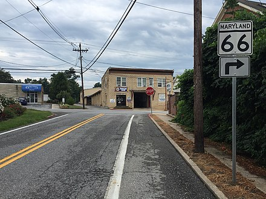

The main method of travel to and from Smithsburg is by road. Maryland Route 66 is the only highway directly serving the town, following the old alignment of Maryland Route 64 through the middle of town. MD 66 connects with MD 64 just outside of the town limits on both the north and south ends, while Maryland Route 77 terminates at MD 64 just southeast of the town limits. Interstate 70 is accessible via MD 66, while Hagerstown can be reached via MD 64 and Thurmont via MD 77.
